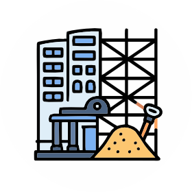
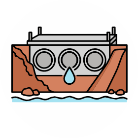
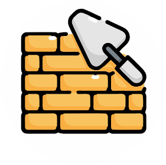
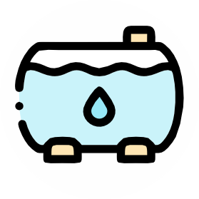
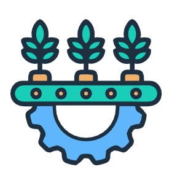
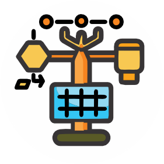

Detalhes da Política
Selecione um ponto no mapa para ver os indicadores.
Filtros de Pesquisa
Legendas
SITUAÇÃO
Sem status
Não iniciado
Em Execução
Concluído
OBJETO

Reforma da nova sede da SEPLAN
Passagem Molhada
Reforma das Unidades Regionais
Cisterna
PAP
Estações meteorológicasEquipamentos de informática
Campanha de Educação Ambiental - PCT
Curso em Meio Ambiente para Jovens Rurais e Professores
Regularização Fundiária
Regularização Ambiental Rural
Sobre a Plataforma
O Mapa de Política de Desenvolvimento Rural é um atlas interativo para o monitoramento dos programas sob supervisão da SUTEF.
Este grupo de apoio estrutura os dados georreferenciados para facilitar a gestão estratégica de programas fundamentais para o estado.
Programas Monitorados:
- 📍 PSI: Projeto de Sustentabilidade Hídrica.
- 📍 Pilares: Fortalecimento da agricultura familiar.
- 📍 Sertão Vivo: Resiliência climática e produtiva.
Desenvolvimento:
Lucas Mendes